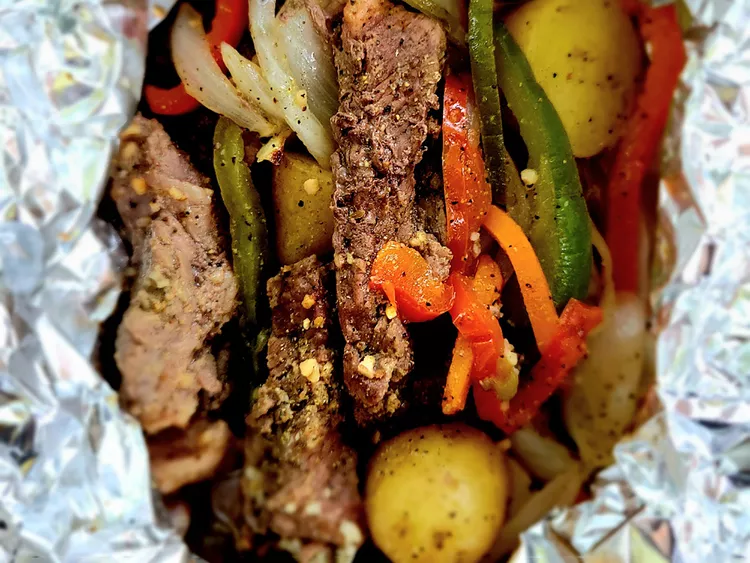

Steak and Potato Foil Packets

This steak and potato foil packets, juicy, and perfectly seasoned.
These steak and potato foil packets are a fun dish that the whole family will love and an easy clean up.
The combination of steak, potatoes, grilled onions, and bell peppers, seasoned to perfection...mmm mmm good!
Ingredient
- 1 pound small Yukon Gold potatoes, halved
- 1 1/2 pounds sirloin steak, cut into bite-sized strips
- 1 yellow onion, sliced
- 1 red bell pepper, sliced
- 1 green bell pepper, sliced
- 1 carrot, thinly sliced
- 4 tablespoons butter, or as needed
- 1 teaspoon steak seasoning, or as needed
- 5 cloves garlic, chopped, or more to taste
How to Make steak and potato foil packets
Here’s a brief overview of what you can expect when you make this steak and potato foil packets:
- Prepare an outdoor grill, preferably a charcoal grill, for medium-high heat.
- Place potatoes in a microwave-safe dish and cook on high until they are tender with a bite, about 3 minutes.
- Divide steak, potatoes, onions, red and green bell pepper, and carrots evenly onto 4 to 6 squares of aluminum foil.
Add 1 tablespoon butter and a little fresh garlic to each pack; fold foil over the top to close each packet tightly.
- Place foil packs on the hot side of the grill. Cook for 5 minutes. Carefully open one foil pack to check for steak doneness.
- If steak is not cooked to your taste after 5 minutes, continue to cook, checking for doneness every few minutes.
An instant-read thermometer inserted into the center will read 130 degrees F (54 degrees C) for medium rare.